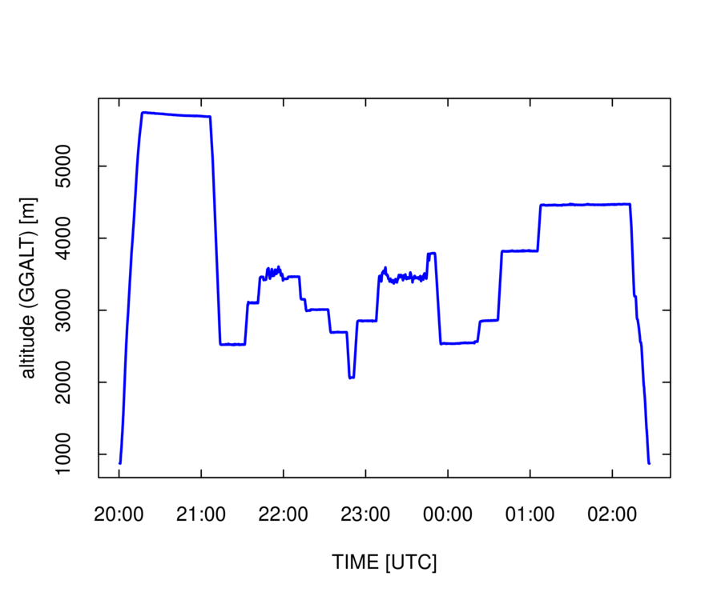
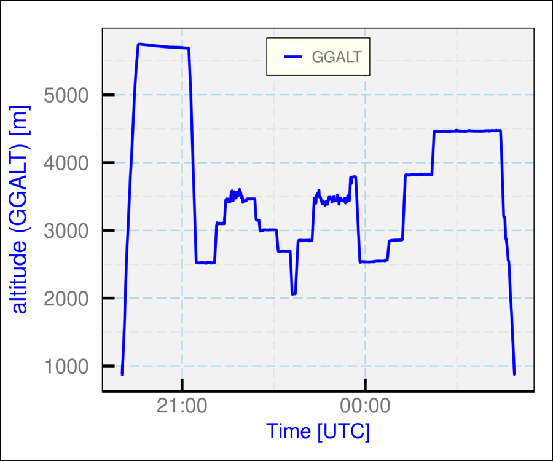

Subsections
This chapter or “layer” summarizes a few key tools that will enable
a new user to get started. Of course, it is certainly possible to
work with the NCAR/EOL/RAF data files using R routines without reference
to the “Ranadu” package featured here, but this discussion will
describe use of that package. There are instructions for installing
the package in the “RanaduManual.pdfRanaduManual.pdf”,
and there it is also recommended to use RStudio as the user GUI for
working with R. Once R, RStudio and Ranadu are installed, it will
be simple to use the functions highlighted in the remainder of this
chapter to get started. The key functions are getNetCDF(), for reading
the netCDF file and producing an R data.frame with the measurements,
and DataFileInfo(), for checking the properties of the netCDF file.
These two functions provide a useful starting point for all data-analysis
projects.
A useful first look at a netCDF file is provided by Ranadu::DataFileInfo(),
which returns characteristics like the project name, flight number,
date/times, variable names, and the data rate. In addition, this function
returns a set of “measurands” (measured properties of the atmosphere
like air temperature) and the set of variables that provide measurements
of that measurand. The measurands in a particular file (the one referenced
above) are shown below:
## Generating R code:
Project <- 'WECAN'
FlightNumber <- 6
fname <- sprintf ('%s%s/%srf%02d.nc', Ranadu::DataDirectory(),
Project, Project, FlightNumber)
FI <- DataFileInfo(fname)
names (FI$Measurands)
## [1] ""
## [2] "altitude"
## [3] "air_temperature"
## [4] "air_pressure"
## [5] "dew_point_temperature"
## [6] "water_vapor_pressure"
## [7] "latitude"
## [8] "longitude"
## [9] "height"
## [10] "humidity_mixing_ratio"
## [11] "barometric_altitude"
## [12] "platform_pitch_angle"
## [13] "atmosphere_cloud_liquid_water_content"
## [14] "air_pressure_at_sea_level"
## [15] "relative_humidity"
## [16] "platform_roll_angle"
## [17] "solar_azimuth_angle"
## [18] "solar_elevation_angle"
## [19] "solar_zenith_angle"
## [20] "platform_speed_wrt_air"
## [21] "platform_orientation"
## [22] "air_potential_temperature"
## [23] "equivelent_potential_temperature"
## [24] "platform_course"
## [25] "virtual_temperature"
## [26] "eastward_wind"
## [27] "northward_wind"
## [28] "wind_from_direction"
## [29] "upward_air_velocity"
## [30] "wind_speed"
The variables that provide redundant measurements of a specific measurand
are named lists with the measurand name and can be displayed by printing
the measurand name, as in the following example:
## Generating R code:
FI$Measurands$air_temperature
## [1] "ATF1" "ATH1" "ATH2" "ATX"
In addition, the “long_name” describing a variable (e.g., here
“ATX”) can be found as follows:
## Generating R code:
FI$LongNames[which('ATX' == FI$Variables)]
## [1] "Ambient Temperature, Reference"
To see all the lists of information contained in the DataFileInfo
list, print the names as follows:
## Generating R code:
names(FI)
## [1] "Number" "Project" "Platform" "DataFile" "Start"
## [6] "End" "Rate" "LatMin" "LatMax" "LonMin"
## [11] "LonMax" "Variables" "LongNames" "Measurands"
Examining these can help a user understand what is included in a particular
data file.
A central component of the Ranadu structure is the Ranadu data.frame,
produced by reading the netCDF data file. It has a structure similar
to that of a spreadsheet, with rows corresponding to measurement times
and columns corresponding to measurements. The data.frame has these
features:
- Each row corresponds to a unique time, and times are sequential (possibly
with gaps). For data rates higher than 1 Hz, rows are produced for
each time interval; i.e., 25 rows per second for 25-Hz files. When
variables are present in the netCDF file at a slower rate, interpolation
is used to produce the higher rate.
- Each measurement corresponds to a single column. When there are multiple
measurements of a given measurand (e.g., temperature), each individual
measurement has its own column. There is a significant exception:
For instruments producing size-distribution arrays, the entire array
occupies one column of the data.frame.
- Attributes describing the data.frame and the variables are carried
with the data.frame. For example, variables often have “short_name”
and “long_name” attributes, and these can be examined by looking
at the variable attributes.
The data.frame is constructed by Ranadu::getNetCDF(fname, variables),
which uses the ncdf4 package of routines to read the netCDF file.
An example of a subset of the data.frame is shown here:
## Generating R code:
Project <- 'WECAN'
FlightNumber <- 6
fname <- sprintf ('%s%s/%srf%02d.nc', Ranadu::DataDirectory(),
Project, Project, FlightNumber)
Variables <- Ranadu::standardVariables(c('UXC', 'VYC'))
Data <- Ranadu::getNetCDF(fname, Variables)
print (sprintf ('Data from data file %s', fname))
## [1] "Data from data file /Data/WECAN/WECANrf06.nc"
print (tibble::as.tibble(Data)) # or print(head(Data))
## # A tibble: 23,701 x 18
## Time ATX DPXC EWX GGALT LATC LONC MACHX MR
## <dttm> <dbl> <dbl> <dbl> <dbl> <dbl> <dbl> <dbl> <dbl>
## 1 2018-08-03 19:55:00 29.9 NA NA 865. 43.6 -116. 0.00125 NA
## 2 2018-08-03 19:55:01 29.9 NA NA 865. 43.6 -116. 0.00125 NA
## 3 2018-08-03 19:55:02 29.9 NA NA 865. 43.6 -116. 0.00125 NA
## 4 2018-08-03 19:55:03 29.9 NA NA 865. 43.6 -116. 0.00125 NA
## 5 2018-08-03 19:55:04 29.9 NA NA 865. 43.6 -116. 0.00125 NA
## 6 2018-08-03 19:55:05 29.9 NA NA 865. 43.6 -116. 0.00125 NA
## 7 2018-08-03 19:55:06 29.9 NA NA 865. 43.6 -116. 0.00125 NA
## 8 2018-08-03 19:55:07 29.9 NA NA 865. 43.6 -116. 0.00125 NA
## 9 2018-08-03 19:55:08 29.9 NA NA 865. 43.6 -116. 0.00125 NA
## 10 2018-08-03 19:55:09 29.9 NA NA 865. 43.6 -116. 0.00125 NA
## # ... with 23,691 more rows, and 9 more variables: PALT <dbl>, PSXC <dbl>,
## # QCXC <dbl>, TASX <dbl>, WDC <dbl>, WSC <dbl>, WIC <dbl>, UXC <dbl>,
## # VYC <dbl>
Here is an explanation of some aspects of loading this data.frame:
- Ranadu::DataDirectory() returns the location of the data directory
on various systems, to avoid the necessity of changing this when moving
among systems. It may return '/scr/raf_data/' or '/Data/' or '~/Data/'
depending on the file system.
- The function Ranadu::standardVariables() returns a set of commonly
used variable names. Additional variables provided to the routine
(here, 'UXC' and 'VYC') are added to the variable list.
- Ranadu::getNetCDF() produces the data.frame. The special case where
Variables <- 'ALL' will return all available variables.2.1 Two additional optional arguments to getNetCDF() are “Start”
and “End”; if set, the range of time values in the data.frame
will be restricted to be between those two times. See “?Ranadu::getNetCDF”
for complete information on this function.
- The last statement, where the data.frame is converted to a tibble,
is used here because the print function for tibbles produces a more
concise and clearer format than that for a data.frame. “print (head
(Data))” could have been used also. More information on tibbles
is included later in this document. The resulting data.frame has 23,701
rows and 18 columns.
It is straightforward to plot variables in the data.frame using standard
R functions. For example, the following code plots the altitude vs. time
using the data.frame loaded previously:
## Generating R code:
plot(Data$Time, Data$GGALT, type='l')
Figure 2.1:
Geometric altitude vs time for WECAN research flight 6, 3 August 2018.
|
Many of the Ranadu tools are aimed at making construction of such
plots straightforward while supporting various manipulations of the
style and content of the plots. Many of these are discussed in later
chapters. However, at this point you will be able to conduct extensive
data-analysis projects using only the standard tools provided by R.
The function Ranadu::plotWAC() calls the standard R function “plot”
with a particular set of conventions. Some reasons you may want to
consider using it include the following:
- [time offset:] The convention in the NCAR/EOL/RAF netCDF files
is that the time variable represents the start of the interval over
which measurements are averaged, so a 1-Hz variable with a specified
time is actually an average where the mean time is 0.5 s later. Plots
generated by plotWAC() adjust for this offset. For this same reason,
you may want to use the routine Ranadu::lineWAC() to add lines to
the plot, instead of the standard “lines” routine provided by
R.
- [plot format:] The set of conventions regarding time labels, axis
formats, and legends may be preferable to those that are standard
with “plot()” and will save you from making those tailoring adjustments.
- [pipe_compatible:] The function plotWAC() can be used in a pipe
where the piped variable is a data.frame tailored to contain specified
variables to construct multiple-variable plots. A similar pipe to
“plot()” will produce a faceted plot of each variable vs. each
other variable, which may not be what you want.
Figure 2.2 shows an example.
## Generating R code:
plotWAC(Data[, c('Time', 'GGALT')])
Figure 2.2:
Example of the same plot as the preceding figure but generated with Ranadu::plotWAC().

|
Another option is provided by Ranadu::ggplotWAC(), as shown in Fig. 2.3:
## Generating R code:
ggplotWAC(Data[, c('Time', 'GGALT')])
Figure 2.3:
Example of the same plot as the preceding figure but generated with Ranadu::ggplotWAC().

|
Additional examples showing the advantages of constructing plots with
pipes will be presented in later chapters of this document. For more
information on the use of these plotting routines, see “?Ranadu::plotWAC”
and “?Ranadu::ggplotWAC”.
Footnotes
- 2.1
- But use this cautiously because size-distribution variables are special
and sometimes cause problems when manipulating the resulting data.frame.
This is discussed later in association with “tibbles.”